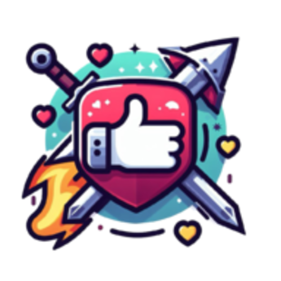

 לייקים של ברזל
עושים לייקים, מפיצים את האמת
download
מתקינים את התוסף לכרום
, לוחצים "הפעל", ונותנים למערכת לעשות לייקים לפוסטים אחד-אחד!
על מנת לבצע לייקים באופן אוטומטי, נא להשתמש בדפדפן Chrome ולהתקין את התוסף.
download
נא להתקין את התוסף על מנת לבצע לייקים באופן אוטומטי!
play_pause
הפעל!
thumb_up
לייק
autorenew
פוסט נוסף